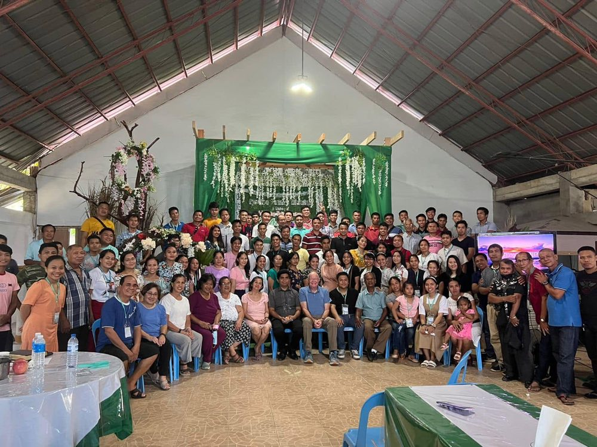
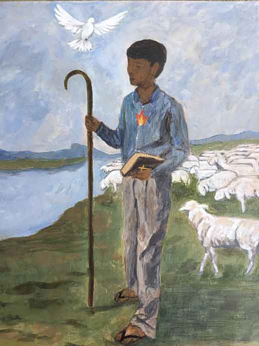

Never in the last 2000 years has there been such a need for the encouragement of the saints than today. The Bible plainly teaches us to encourage one another, "and all the more as you see the day drawing near" (Hebrews 10:25)
We have only seen glimpses of the terrible scourge of discouragement that will descend like a black cloud on the Christian church worldwide. The causes will include physical, financial, and relational difficulties...and will come from unsuspecting sources.
The author of Hebrews informs us that such a scourge unchecked will lead to unbelief and hardness of heart through a course of disillusionment, deception, and disobedience. (Hebrews 3:12-19)
The primary targets of this scourge are Christian leaders...pastors, evangelists, and missionaries... because discouragement will render them ineffective. The Apostle admonished the Ephesians elders to "be on guard for yourselves and for all the flock, among which the Holy Spirit has made you overseers, to shepherd the church of God which He purchased with His blood." (Acts 20:28). These spiritual shepherds, appointed by the Holy Spirit, bear a high and holy calling...to properly care for the flock of God, the Body of Christ. If one of these should fail, the damage to the vulnerable flock is always catastrophic..thus our major problem...and the major challenge of Operation Barnabas International.
OBI became one of the initial ministries of ANM in the fall of 1996. It was developed out of a recognized need to "come alongside" the over 8000 overseas pastors that we are responsible for...the unknown and unheralded...the faceless and forgotten.... At the same time providing a platform for Americans to participate in and experience indigenous missions...to engage pastors and their wives for the purpose affirming their value, renewing their vision, and deepening their spiritual lives. This engagement may be in the form of conferences or just informal encounters in villages.
Many times members of the ministry team "catch the vision" and return to the U.S. to advocate for their fellow overseas laborers. Many thousands of dollars have been sent and continue to be sent through ANM each year as a result of 20 years of such advocacy. ..thus our ministry theme adopted nearly ten years ago reads: "Refreshing tired feet ...fitting them with sandals" (encouragement and advocacy).
During these past 20 plus years, OBI has conducted nearly 200 overseas conferences and encounters providing encouragement and challenge to thousands of spiritual leaders. Sound Biblical preaching, spirited worship, and warm fellowship have combined with good food, clean bedding, and soap and water to offer a memorable experience for many who struggle in ministry.
Stories and testimonies abound from ministry leaders and pastors whose lives were dramatically altered because of this ministry. Literally hundreds of chosen vessels, beleaguered and beaten down, have rededicated themselves to their calling at OBI conferences. I remember well the ministry leader who came to me after a conference for his pastors and declared that he had been aware of six (6) pastors prior to the conference who were planning to quit the ministry; however, God came...the Spirit moved on hearts through the spoken Word...faith was ignited, hope was renewed, and re-commitments were made for the long haul.
You see,... there is a definite intangible element about OBI...an anointing of sorts that cannot be quantified nor calculated by mundane statistics. No one carries revival, refreshing, and renewal of the shepherd spirit in a briefcase. OBI is not a "pep rally" nor a temporary "emotional fix", but rather a time of learning from.. but moving beyond the past, renewing dreams and God-given vision, hearing with receptive ears anointed messages from the Word, and opening of hearts to the fresh touch of the enabling Spirit providing strength for the long term and empowering men to fulfill their calling. Any "holy convocation" that falls short of this is a failure!
Perhaps my friend Dan said it best when he wrote to me from a conference in Liberia, (and I quote) "I am more convinced than ever of the need, necessity, and privilege of OBI. The need is for so much and for so many... for OBI is triage!...the place where God brings His church together to send His love and assurance, His strength and anointing, to those who are the weakest, the most frail, and to those who are most likely to "not make it". We speak courage into the discouraged and victory into the defeated." (end of quote)
From Nepal: (quote)"Our pastors did not only enjoy the conference, but the fruits are coming up. This conference stirred up the calling and vision of the leaders in this part of Nepal. Thank you for igniting the servants of the Lord." (end of quote)
From a pastor and his wife in Togo: "God spoke to us during the conference. We received in three days what we had not received after many years of fasting and praying. Thank you."
From Liberia: "Whenever a ministry team member stands to deliver the Word, blessing flows, encouragement and strength come....You are God's special forces."
From Indonesia: "I have spent seven years giving out. At the OBI conference, I was able to take in. Many other conferences gave me headaches because of all the information and assignments, but OBI spoke to my heart."
...and just recently, this report came from the Bangladesh conference: "It is not possible to explain clearly about my feelings. The Lord Jesus said, “you cannot see the wind, but you feel it. So is the one being born of the spirit.” It is the same for me. I feel something has happened in me but I cannot explain it." A testimony of the Intangible...that which cannot be grasped or manipulated!
Then there is this quote from a dear friend, former investment manager for a Fortune 500 company, and later a fruitful American senior pastor who had been a part of OBI ministry teams and caught the vision: "I have never before seen a ministry with the potential to impact the work of the Lord so much (as OBI)."


The message of the painting
The Faithful Shepherd
- A sturdy staff speaks of the responsibility of the shepherd to direct and protect his sheep.
- A Bible in hand speaks of the authoritative Message of the Christian shepherd and his on-going responsibility to make disciples.
- The sheep speak of the flock of God entrusted to the shepherd's care.
- A dove speaks of the indispensable, yet intangible, Holy Spirit to empower the shepherd to accomplish the will and work of God.
- A burning heart speaks of the shepherd's spiritual gift and vision ignited by the Spirit.
- The sandals remind us of the beautiful feet of those who proclaim the Good News of Christ.
The Christian shepherds of the world are the reason for… and responsibility of… the ministry we call OBI.